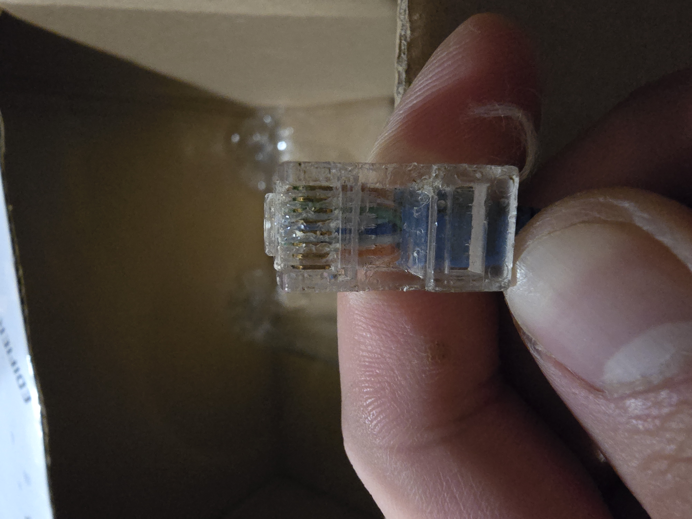
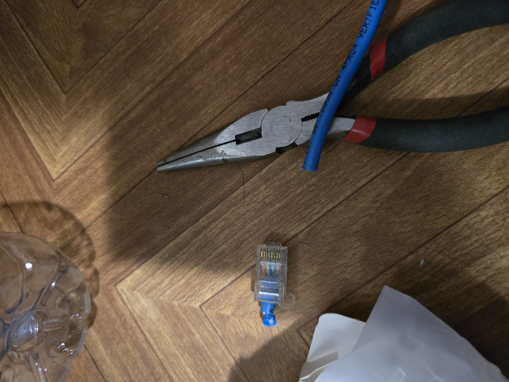
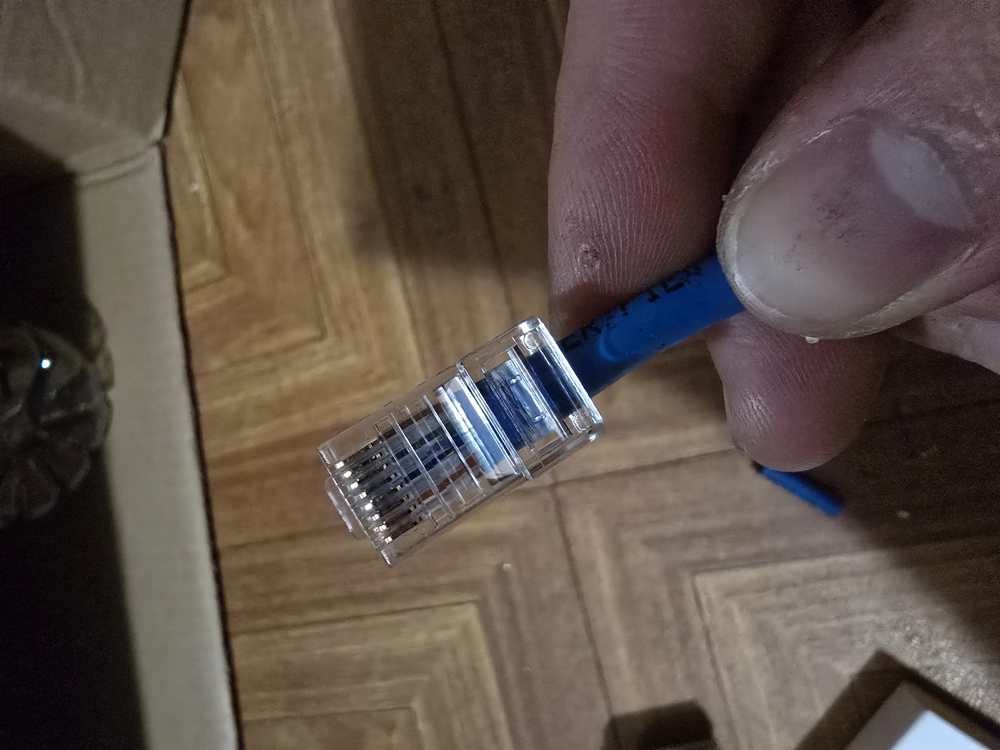

Fixing Ethernet Terminal
Overview
My family just moved into a new house with a bungalow. I noticed that there is an ethernet cable running from the house to the bungalow and got so excited since I will be able to use a wired connection for my computer. I tested it out straight away by plugging a spare router in the bungalow end to a laptop in the house. I did not receive any signal from the router to the laptop, then I started to look into it.
The Findings
When I tested it and not receiving any signal from the router, I had to isolate the different things involved. I tested out if my router is working fine by plugging it into a computer that I know is working well and also with a cable that I have used before. Using components that I know are working will help me know where the problem lies. Next, I tested the laptop I was using and it connects to other devices using its ethernet port without any problem. I then ruled out that the cable running from the house to the bungalow is the problem. I checked the terminals and found the on in the bungalow is really worn out.

The Process
I started by cutting the damaged part off and stripping an appropriate amount off to reveal the different strands. Below is the sped up video of me doing the process. Disclaimer: I am doing this without proper tools since I did not have enough to buy a crimping tool and I got too excited to do it.

Conclusion

- Successfully replaced the terminal of the cable
- The cable is now working but is experiencing a problem
- The cable is not reaching the full speed which likely due to the contact pins not really pushed down
- A proper crimping tool would likely avoid this problem
Challenges & Lessons Learned
The biggest challenge is fixing the cable without the proper tools needed for this. It was a bit of struggle trying to push the pins down with the flat head screwdriver. This mini project that I did helped me learn about the standards used in wiring the RJ45 cable and also giving me hands-on experience in cutting splicing and crimping of and RJ45.